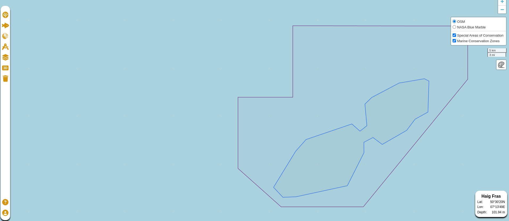

2D Map
Introduction
Our 2D map version is built upon the React Leaflet library, offering a feature-rich platform for visualizing geospatial data. In this documentation, we'll delve into the details of our 2D map implementation, the base map layers used, and how interaction with the map is facilitated.
The Foundation: React Leaflet
To create our 2D map, we've harnessed the power of the React Leaflet library. React Leaflet provides a robust framework for building interactive and visually engaging maps within a React application. To enhance our map's capabilities and interactivity, we've developed additional packages, which will be detailed in the following sections.
Base Map Layers
A map's foundation lies in its base layers, and for our 2D map, we have incorporated the following base layers:
-
OpenStreetMap: This layer is sourced from OpenStreetMap and is accessible via the following URL: OpenStreetMap Layer.
-
NASA Blue Marble: This layer is derived from NASA's Blue Marble imagery and can be accessed through the URL: NASA Blue Marble Layer.
{kind=link}
{kind=link}
These base layers provide essential geographical context for our 2D map, serving as a canvas on which various geospatial data can be visualized.

Above is a visual representation of our 2D map, showcasing its usage with React Leaflet.
Map Interaction
Interacting with the map is a fundamental aspect of geospatial applications. In our implementation, interaction with the map is facilitated through the definition of a 'ref' prop within the MapContainer component from React Leaflet.
This 'ref' prop is passed a setState function called setMap, created within the Map component. When a layer is added to the map, it is assigned a unique 'attribution' value. This attribution value is crucial for identifying and interacting with specific layers on the map. We utilize this value to perform the necessary operations when interacting with the layer.
It's worth mentioning that due to certain restrictions in Webpack for use with React Vite, we faced limitations in adding multiple Leaflet auxiliary libraries to the project. To overcome this challenge, these libraries were manually included in the project by copying the associated .js files to the repository. The following libraries have been integrated:
- leaflet-ruler.js: This library allows users to measure distances on the map.
- vectorgrid: Enables the addition of MBTiles files to the map.
- CanvasLayers: Provides support for adding .asc files to the map.
This combination of React Leaflet, base map layers, and supplementary libraries ensures a feature-rich and interactive 2D map for our geospatial applications.
If you have any questions or require further information about our 2D map implementation, please consult the project repository or reach out to our support team for assistance.